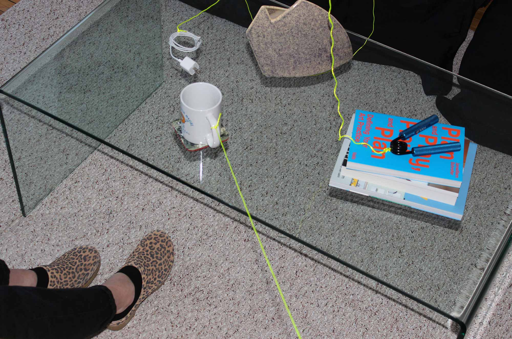

Research & References
Modularity was the starting point of this project: I am interested in how elements within a modular system communicate with one another, especially in a non-digital context. Initially, I wanted to create a series of modular household objects composed of a set number of interchangeable parts, inspired by the OpenStructures project. Ultimately, I began to wonder what these ideas would look like scaled up—on the level of the whole object rather than the part, the object itself becomes a module within the system of the home.
The Fabric of Spacetime Warped by Mass

Open Structures Project

Compatibles, Open Strucutres Project

Open Structures PlayStation II installation at MAD

The Open Workshop, Re-Assembling the Archive
Continuous Monument, Superstudio
Continuous Monument, Superstudio
The Installation
For this installation, I selected six everyday objects and physically connected them with nylon rope, forcing one object to move when another was handled or shifted to a different place within the room. This created a visible, tangible network between the objects, revealing their relationships to one another within the space. This “tangible system”, while acting as a visual representation of the choreographies implicit in sharing space, also allowed for a different type of communication between the people in the space.
When the grip strengthener moves, so do the sunglasses. When the pillow is repositioned, the phone charger is pulled off the table. Communication happens in space, with the movement of the objects, but also in time: next time you enter the room, an object might not be where you left it because someone else has used the space since. To enter the room is to immediately be aware of the networked connections between everything.